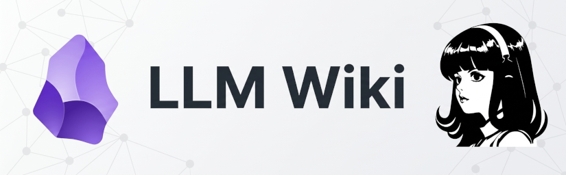

Segundo cerebro en Obsidian con el patrón LLM Wiki

El artículo anterior terminaba con un agente de IA viviendo en un VPS: encendido las 24 horas, accesible desde cualquier dispositivo por una red privada Tailscale y capaz de leer y escribir ficheros, ejecutar comandos y hablar por Telegram. Hermes destaca sobre otros agentes por su capacidad para mantener una memoria que cruza sesiones y va guardando skills con los procedimientos que aprende. Pero esas capacidades de memoria están enfocadas al agente, no a mi. Si lo que voy aprendiendo vive en el contexto del agente, dependeré de él para volver a encontrarlo.
Ese es el hueco que viene a cubrir lo que se suele llamar un segundo cerebro: una memoria externa, en ficheros de texto plano, que puedo abrir y consultar directamente (se va a almacenar en Obsidian) y que además el agente puede leer y mantener. En un principio tenía pensado usar el sistema PARA de Tiago Forte en el vault de Obsidian, pero luego llegué al gist de Andrej Karpathy sobre el patrón LLM Wiki, y cambié de idea. No tuve que montarlo desde cero: Hermes Agent trae preinstalada una skill llm-wiki que implementa ese mismo patrón con algunos añadidos, así que fue mi punto de partida. En este artículo cuento cómo quedó el montaje, qué es el patrón, en qué se aparta la skill del gist original, cómo se ha montado en Obsidian, cómo se conecta con el agente, y qué he aprendido en las primeras semanas de uso.
El problema con "preguntar a las fuentes"¶
La forma habitual de trabajar con un LLM y tus documentos se llama RAG: le das una colección de ficheros, el modelo busca los fragmentos relevantes en el momento de la pregunta y compone una respuesta. Funciona, pero tiene una pega de fondo: el modelo vuelve a descubrir el conocimiento desde cero en cada consulta. Pregunta algo que exija sintetizar cinco documentos y tendrá que localizar y encajar los fragmentos cada vez. No hay consolidación y organización del conocimiento.
La idea de Karpathy es distinta. En lugar de recuperar de los documentos brutos en el momento de la pregunta, el agente va construyendo y manteniendo un wiki permanente, un conjunto de ficheros markdown estructurados y enlazados entre sí, que se coloca entre tú y las fuentes. Cuando entra una fuente nueva, el agente no se limita a indexarla. La lee, extrae lo relevante y lo integra en el wiki, actualizando páginas, anotando dónde lo nuevo contradice lo viejo y reforzando o matizando la síntesis existente.
El resultado es un artefacto que se compone. Las referencias cruzadas ya están puestas, las contradicciones ya están señaladas, la síntesis ya refleja todo lo leído. Y hay un reparto de papeles muy claro: tú eliges las fuentes y haces las preguntas; el agente resume, enlaza, archiva y lleva la contabilidad. En palabras del propio Karpathy, Obsidian es el IDE, el LLM es el programador y el wiki es el código.
El patrón, en tres capas¶
La arquitectura es simple. Son tres capas y dos ficheros de navegación:
| Capa | Qué es | Quién escribe |
|---|---|---|
1. Fuentes (raw/) |
El material original: artículos, vídeos, papers, notas propias, transcripciones de reuniones | Yo |
2. Wiki (entities/, concepts/, comparisons/, queries/) |
Las páginas de conocimiento enlazadas | El agente |
3. Esquema (SCHEMA.md) |
Las reglas de funcionamiento y las convenciones | Los dos, co-evoluciona |
Navegación (index.md, log.md) |
El catálogo de contenido y el registro de acciones | El agente |
- Capa 1, inmutable. Los ficheros de
raw/se leen, nunca se modifican. Son el origen de la información. Si una página del wiki afirma algo, siempre se puede ir a comprobar qué decía exactamente el original. - Capa 2, propiedad del agente. Yo leo las páginas; las escribe él. Lo que en un wiki tradicional haríamos a mano, aquí se delega al agente con su superior capacidad de situar la información en el lugar adecuado y relacionarla con el contenido ya existente.
- Capa 3, el fichero clave. Es lo que le da las reglas al agente para convertirlo en un bibliotecario con mi estilo propio. Es el fichero
SCHEMA.md(en el gist de Karpathy está asociado a agentes concretos, pero aquí está generalizado) que se puede considerar como la skill de mi wiki particular.
Los dos ficheros de navegación merecen una explicación, porque son los que hacen que esto escale sin base de datos vectorial:
index.mdestá orientado al contenido: un catálogo con cada página del wiki, su enlace y una línea de resumen. Cuando hago una consulta, el agente empieza por leer el índice y desde ahí baja a las páginas que tocan.log.mdes cronológico y append-only: cada ingesta, cada consulta archivada, cada lint queda registrado al final, sin reordenar lo anterior.
Y las tres operaciones del patrón:
- Ingesta: entra una fuente y se convierte en páginas nuevas o actualizadas del wiki.
- Consulta: una pregunta se responde leyendo el wiki y citando las páginas de las que sale la respuesta.
- Lint: una revisión de salud del wiki (enlaces rotos, páginas huérfanas, frontmatter incompleto, contradicciones).
El punto de partida: la skill llm-wiki de Hermes¶
El gist de Karpathy es conceptual. Comunica la idea a alto nivel y espera que tu agente vaya concretando los detalles contigo, aunque en manos de un buen agente se puede convertir fácilmente en algo operativo. Pero Hermes Agent trae preinstalada una skill llm-wiki que ya implementa el patrón entero (mismo origen y misma licencia MIT) y que lo amplía justo en los puntos donde el gist se queda corto o es genérico. Fue mi base, y estas son las diferencias que puedo señalar:
| Gist de Karpathy | Skill llm-wiki |
|
|---|---|---|
| Esquema | CLAUDE.md / AGENTS.md, atado al agente |
SCHEMA.md, independiente del agente |
| Forma | Manifiesto: la idea | Procedimiento paso a paso (ingesta, consulta, lint) |
Fuentes en raw/ |
Sin metadatos | Frontmatter con sha256 del cuerpo (el detalle, en la sección de la ingesta) |
| Estructura | Sugerida y libre | Directorios fijos, taxonomía de etiquetas cerrada y umbrales de página |
| Auditoría | Descrita, no automatizada | Comprobaciones concretas de lint (huérfanas, enlaces rotos, frontmatter) |
| Arranque de sesión | - | Regla de leer esquema → índice → log antes de tocar nada. Es lo que evita duplicar páginas y repetir trabajo ya hecho en cada sesión nueva |
Además de esto, me siento particularmente más seguro utilizando patrones rígidos donde siempre está claro cómo hay que trabajar. Así que lo que hice fue adaptar, no inventar: partí de la skill, dejé el gist como referencia de la idea original y fui ajustando las convenciones de mi vault en un SCHEMA.md propio, que es lo que cuento unas líneas más abajo.
La instalación¶
Aquí no hay un programa que instalar ni un servicio que arrancar, y esa sencillez fue una de las cosas que más me convenció del enfoque. El procedimiento completo, tal como lo hice, es este:
- Un vault de Obsidian cualquiera. El wiki es la carpeta: no hace falta un formato previo ni plugins especiales, solo abrirla como vault en Obsidian.
- La skill ya estaba en Hermes. Le expliqué que quería empezar a utilizarlo y que sabía que existía una skill preinstalada para ello; trae
llm-wikide fábrica, así que no hubo nada que descargar. - Declarar dónde vive el vault en el fichero de entorno del perfil, para que la skill no caiga en su directorio por defecto. Lo cuento unas líneas más abajo.
- Pedirle la estructura inicial. Con eso le bastó para crear el andamiaje de las tres capas:
SCHEMA.md,index.md,log.mdy los directorios deraw/y de las páginas, que es el árbol que aparece en el apartado de la arquitectura.
Y ya está. Lo que queda no es instalación, sino acordar cómo se trabaja, que es lo que recoge el SCHEMA.md y lo que ha ido cambiando con el uso.
De PARA a LLM Wiki¶
PARA organiza por carpetas y por horizonte temporal (Proyectos, Áreas, Recursos, Archivo). Es un buen sistema, pero está pensado para clasificar cosas, y la pregunta "¿dónde archivo esto?" aparece una y otra vez. El patrón LLM Wiki resuelve otra cosa: no ordena documentos, compila conocimiento. Una fuente puede tocar diez o quince páginas, y ese efecto cruzado es justamente el que se busca.
El cambio de mentalidad más útil que hice al migrar fue separar tres mundos que tendemos a mezclar:
- Acción (
tareas/): lo que hay que hacer. Lista con checkboxes, en un fichero único, legible en el móvil sin conexión. - Reflexión personal (
diario/): la bitácora del día a día. Mi territorio, el agente no lo toca. - Conocimiento (el wiki): lo que se compila, se enlaza y se consulta.
Ni las tareas ni el diario entran en el wiki: no hay frontmatter que darles, no se indexan, no se lintean. El agente solo los toca cuando se lo pido explícitamente. La excepción interesante es la promoción: si un día anoto en el diario una configuración que funcionó o una conclusión sobre un tema, esa anotación puede ascender al wiki como fuente de primera persona, citada en sources:. El fichero del diario queda intacto.
La arquitectura del vault¶
Así queda el vault en disco. Los subdirectorios de raw/ clasifican la fuente por su naturaleza, no por tema (el tema lo resuelven las páginas del wiki):
1 2 3 4 5 6 7 8 9 10 11 12 13 14 15 | |
Un detalle de git
El vault se sincroniza con git (lo cuento más abajo), y git no versiona directorios vacíos. Los cinco directorios del andamiaje que aún no tenían contenido no aparecían en los demás dispositivos, con la sensación de que el vault se estaba creando a medias. La solución clásica es un fichero .gitkeep dentro de cada uno. No es markdown, así que no lo indexa el wiki, no interfiere en el lint y Obsidian no lo muestra.
Cómo se conecta el agente con Obsidian¶
El agente no necesita interaccionar con la aplicación Obsidian, es decir no hay conexión. El vault es la carpeta de trabajo del agente. Obsidian es simplemente una aplicación que abre y renderiza esos ficheros markdown en los dispositivos donde me interese.
Lo que sí hay que declarar de cara a Hermes es dónde vive el vault, en el fichero de entorno del perfil con el que trabajo con él:
1 2 3 | |
Las dos variables apuntan al mismo directorio. Con el vault de Obsidian y el wiki compartiendo raíz, el grafo, las vistas y la sincronización del móvil trabajan sobre el mismo material.
Sobre las skills (los procedimientos que el agente carga cuando la tarea las necesita) hay tres piezas:
llm-wiki: la skill preinstalada de Hermes que implementa el patrón entero.obsidian: el manejo de ficheros del vault (leer, buscar, crear, enlazar).- Las convenciones concretas de mi vault implementadas en
SCHEMA.md.
SCHEMA.md¶
Es el fichero que decide si esto funciona o degenera en un montón de notas sueltas. Contiene:
- El dominio del wiki y el flujo de trabajo (captura, ingesta, consulta, lint) paso a paso.
- Las reglas de respuesta del agente: si la información no está en las fuentes del wiki, decirlo expresamente, sin inventarla ni rellenarla con conocimiento del exterior sin marcarlo como tal.
- Las zonas exclusionadas (
tareas/,diario/) con sus reglas comunes. - La estructura de
raw/, con las dos reglas que más me importan: permanencia (una fuente no se borra tras ingerirla) e inmutabilidad (el agente añade frontmatter, pero nunca toca el cuerpo). - El frontmatter obligatorio de las páginas, la taxonomía de etiquetas (cerrada: para usar una nueva hay que añadirla antes) y los umbrales de página.
- La política ante contradicciones: no sobrescribir en silencio; anotar ambas posiciones con fecha y fuente.
- Y una sección final de qué NO entra en el wiki.
El esquema, corto; el conocimiento, en el wiki
Cuando le pedí ejemplos concretos de cada caso de uso de los mencionados en el gist de Karpathy, la tentación era meterlos en SCHEMA.md. Es un error. El esquema es cómo se trabaja aquí (reglas, cortas y estables), y una guía de casos de uso es conocimiento sobre el patrón, que pertenece a una página de concepts/ con su frontmatter, su entrada en el índice y sus enlaces.
Esta sección es la que peor se documenta en los tutoriales y la que más vale: las reglas se escriben para que el agente se autocontenga, no para que quede bonito el repositorio.
La captura: el Web Clipper como puerta de entrada¶
Para que el wiki crezca hace falta que meter fuentes sea sencillo. La pieza que uso es la extensión de navegador Web Clipper de Obsidian. Un clic en el navegador y el contenido de la página (o la transcripción completa con timestamps, si es un vídeo de YouTube) aterriza en el vault como markdown con su frontmatter.
La configuración que tengo de la plantilla es la siguiente:
| Campo de la plantilla | Valor |
|---|---|
| Nombre de la nota | {{title|lower|replace:" ":"-"|trim}} |
| Ubicación de la nota | raw/articles |
| Propiedades | source_url: {{url}}, ingested: {{date:YYYY-MM-DD HH:mm}}, tags: ['clippings'] |
| Contenido de la nota | {{content}} |
El clipping de vídeos de YouTube es especialmente práctico. El clipper extrae la transcripción entera, así que un medio efímero se convierte en texto consultable y citable por marca de tiempo. Cuando el agente afirma que el vídeo dice tal cosa, se puede ir a comprobarlo.
El clipper no es el wiki
La extensión guarda ficheros; no indexa, no enlaza, no calcula hashes y no escribe en el log. Lo que convierte un clip en conocimiento es la ingesta posterior.
Tomé la decisión de no clippear todo lo que me interesa. Sigo usando mi cuenta de marcadores en Diigo para la cola ligera de enlaces, los típicos que pienso me pueden interesar en algún momento futuro. El clip se reserva para el contenido que ya me importa, y la promoción natural es precisamente esa; cuando un marcador madura (lo he leído, lo usaría, lo citaría), se clippea y entra en raw/. Así el wiki acumula solo lo digerido.
La ingesta: el ciclo de trabajo¶
La ingesta nunca es automática, se pide. Yo acumulo fuentes cuando las veo y el procesado espera. Cuando quiero, se lo digo a Hermes ("ingesta lo que hay en raw/") y él hace esto:
- Añadir al fichero de
raw/el frontmatter que le falta (source_url,ingestedy unsha256del cuerpo) y renombrarlo a la convención si hace falta. - Comprobar qué páginas existen ya, leyendo
index.mdy buscando en el vault, antes de crear nada. - Crear o actualizar páginas aplicando los umbrales del esquema.
- Actualizar
index.mdy anexar la entrada enlog.md. - Informarme de cada fichero creado o modificado.
Del frontmatter de las fuentes, lo único que merece una línea aparte es el hash:
1 2 3 4 5 | |
Ese sha256 se calcula sobre el cuerpo, no sobre el frontmatter, y sirve para dos cosas: si vuelvo a procesar la misma URL y el hash no ha cambiado, se salta el trabajo; si ha cambiado, salta la señal de que la fuente original se ha editado por debajo. En un wiki donde las páginas citan fuentes, enterarse de que la fuente cambió es la mitad del mantenimiento.
Una recomendación de Karpathy que he adoptado es ingerir las fuentes de una en una y conmigo mirando. La ingesta por lotes existe y es tentadora cuando acumulas veinte clips, pero es el camino más corto a un wiki degradado.
Quisiera hacer hincapié en algo importante. El wiki tiene que ser un repositorio de lo que he aprendido y quiero retener: material que he leído, entendido y sobre el que tengo algo que decir. No un vertedero de enlaces o documentación que no he asimilado. Lo que sí delego sin problema es la parte tediosa, que es justo la que hacía que abandonara sistemas anteriores: mantener los enlaces, actualizar el índice, avisar de las contradicciones, no dejar páginas huérfanas. La diferencia es que el agente ordena y propone, mientras el criterio y el entendimiento siguen siendo míos.
La consulta¶
Consultar es la parte que justifica todo lo anterior. El agente lee el índice, identifica las páginas relevantes, las lee y compone una respuesta citando de dónde sale cada cosa. Y hay una regla que me pareció tan sensata que la dejé escrita en el esquema como regla permanente: si la respuesta no está en el wiki, se dice. Nada de rellenar huecos con la web o con lo que el modelo haya aprendido en su entrenamiento, que es exactamente lo contrario de tener un segundo cerebro.
La otra mitad de la idea es que una buena respuesta puede archivarse como página nueva del wiki. Una comparativa, un análisis, una conexión que no habíamos visto. Si re-derivarlo costaría trabajo, va a queries/ o a comparisons/ y deja de perderse en el historial de un chat.
El mantenimiento: el lint¶
Un wiki que crece también se degrada. Para eso está el lint, una pasada de salud que comprueba, entre otras cosas: enlaces rotos, páginas huérfanas (sin ningún enlace entrante), coherencia entre index.md y el sistema de ficheros, frontmatter completo, etiquetas fuera de la taxonomía, páginas demasiado largas y hashes de raw/ alterados.
Mi primera pasada de lint encontró lo siguiente:
| Comprobación | Resultado |
|---|---|
| Etiquetas fuera de taxonomía | 1 (una etiqueta inventada sobre la marcha) → corregida y categoría añadida a la taxonomía |
| Páginas con menos de 2 enlaces salientes | 6 → referencias cruzadas reforzadas |
| Páginas huérfanas | 2 → enlazadas desde otras páginas |
Fuente en raw/ sin sha256 |
1 (un clip guardado con toda la chatarra de la página alrededor) → recortada al contenido real |
| Páginas de más de 200 líneas | 1 → excepción documentada en el esquema |
La última es mi favorita porque es una regla que decidí no cumplir. En ese caso lo honesto es documentar la excepción en lugar de trocear. Las reglas del esquema no son dogma, son decisiones, y las que se incumplen a conciencia se anotan.
La sincronización entre dispositivos: git, no Obsidian Sync¶
Como he comentado al principio, la idea del wiki es que pueda ser consultado directamente por un humano (en este caso por mi) y en cualquier lugar, no solo en el VPS que es donde se construye. Además, el Web clipping y la aportación de contenido raw se hará desde distintas máquinas (el móvil, los ordenadores personal y del trabajo).
Obsidian ofrece un servicio de sincronización de pago, pero para el montaje que he hecho, una de cuyas "patas" más importantes es la instancia en el VPS, resulta más conveniente montar la sincronización de forma manual. Elegí hacerlo mediante un repositorio privado git que mantengo en GitLab.
El circuito tiene tres tipos de dispositivo y todos convergen en el mismo repositorio remoto:
| Dispositivo | Mecanismo | Cuándo sincroniza |
|---|---|---|
| Móvil Android | Termux con una función propia | manual, o cada 15 minutos |
| Portátiles | plugin de la comunidad Git (por Vinzent) |
automático cada 5 minutos |
| VPS | git pull / push a demanda y mediante daemon systemd |
cuando lee o escribe y cada 5 minutos |
El daemon systemd montado en el VPS para hacer commit y sincronizar es el siguiente:
1 2 3 4 5 6 7 8 9 10 11 12 13 14 15 16 17 18 19 20 21 22 23 24 25 26 27 28 29 30 31 32 33 34 | |
1 2 3 4 5 6 7 | |
1 2 3 4 5 6 7 8 9 10 11 | |
1 2 3 | |
La sincronización en Android¶
En el móvil el plugin Obsidian Git no sirve, ya que la extensión no tiene acceso al cliente git. El intermediario allí es Termux, un emulador de terminal para Android, y un script propio que hace el trabajo.
-
Instalar Termux desde F-Droid (no desde Google Play, que hace tiempo que no lo distribuye), junto con Termux:Widget, que añade un botón para sincronizar en un escritorio.
-
Preparar Termux:
1 2 3
pkg update && pkg upgrade -y pkg install git openssh -y termux-setup-storage # acceso al almacenamiento compartido -
Identidad de git y directorio de confianza. El
safe.directoryes obligatorio porque el repositorio vive fuera del home de Termux, que es el único directorio en el que git confía por defecto:1 2 3
git config --global user.name "Tu Nombre" git config --global user.email "tu@correo.example" git config --global --add safe.directory '*' -
Una clave SSH propia del móvil. Una por dispositivo, porque el servicio las guarda como claves independientes:
1 2
ssh-keygen -t ed25519 -C "android@ejemplo" -f ~/.ssh/id_ed25519 -N "" cat ~/.ssh/id_ed25519.pubLa clave pública se pega en GitLab, en Preferencias → Claves SSH.
-
Clonar el vault y ajustar tres cosas. El vault va al almacenamiento compartido (
~/storage/shared/, que es/storage/emulated/0/) para que Obsidian pueda abrirlo:1 2 3 4 5 6
cd ~/storage/shared/Documents git clone git@gitlab.com:usuario/mi-vault.git mi-vault cd mi-vault git config core.filemode false # Android no guarda permisos unix: evita diffs fantasma git config core.symlinks false # el almacenamiento compartido no soporta symlinks git config pull.rebase false -
Abrir la carpeta como vault en Obsidian (Open folder as vault) y desactivar el plugin Obsidian Git en el móvil. No funciona y hará que aparezcan errores continuamente.
-
El script de sincronización. Una función en el
.bashrcque hace commit, pull y push de una vez:1ob(){ cd ~/storage/shared/Documents/mi-vault && git add -A && git commit -m "Android $(date +%F-%T)" && git pull --no-edit && git push; }A partir de ahí, escribir
oben Termux sincroniza en un solo comando, y sube y baja los cambios. Con Termux:Widget ese mismo comando se puede dejar como botón en cualquier escritorio. -
Auto-sync cada 15 minutos (opcional). Con
cronie:1 2 3 4
pkg install cronie crontab -e # sincronizar cada 15 minutos: */15 * * * * cd ~/storage/shared/Documents/mi-vault && git add -A && git commit -m "Android auto $(date +%F-%T)" && git pull --no-edit && git push >/dev/null 2>&1
Un aviso sobre este último punto: el cron de Termux no es un servicio del sistema, solo corre mientras Termux está abierto (o al encender el móvil, si se instala termux-boot). Si el teléfono lleva días sin abrir Termux, esa sincronización automática no ha ocurrido, y eso conviene tenerlo presente antes de fiarse de lo que hay en el remoto.
Lo que he aprendido en las primeras semanas¶
raw/no es una bandeja de entrada, es el archivo. Lo natural al empezar es pensar en borrar las fuentes una vez procesadas. Sería un error: sin ellas, las páginas del wiki citan un hash de algo que ya no existe, y no hay forma de volver a comprobar nada ni de reprocesar con otro enfoque dentro de seis meses.- El esquema se co-evoluciona. Todas las discusiones ("¿esto va en el wiki?", "¿y el diario?") acaban en una regla escrita. Y eso es el producto real del trabajo, más que las páginas.
- El agente necesita que le prohíbas inventar. Es el fallo por defecto de cualquier LLM con acceso a tus notas, y hay que escribirlo explícitamente: si no está en las fuentes, se dice.
- El wiki crece por fuentes, no por páginas. Los umbrales existen para no crear una página por cada mención pasajera. Evitan terminar con un wiki de trescientas páginas irrelevantes.
- Curar es la mitad del método. Si todo entra, el
raw/se llena de material que nunca procesarás y el wiki se ahoga. De ahí la separación entre la cola ligera de marcadores y el clip consciente. - Los plugins de Obsidian van por libre. Aquí conviven pocos (calendar para el diario, tareas, sincronización por git) y todos con una regla clara de quién escribe qué. Tener el calendario generando un fichero diario dentro del wiki, por ejemplo, habría metido una página nueva y ruidosa cada día.
Conclusión¶
Y esto sería todo. Ahora tenemos un segundo cerebro, el vault de Obsidian donde el agente va acumulando el conocimiento y que se sincroniza por git entre el VPS, los portátiles y el móvil.
Para alimentarlo basta con dejar las fuentes en raw/ y pedirle la ingesta. De mantener las páginas, las referencias cruzadas y el registro se encarga él. Las reglas con las que lo hace son las de mi SCHEMA.md, que seguramente evolucionarán con el tiempo.